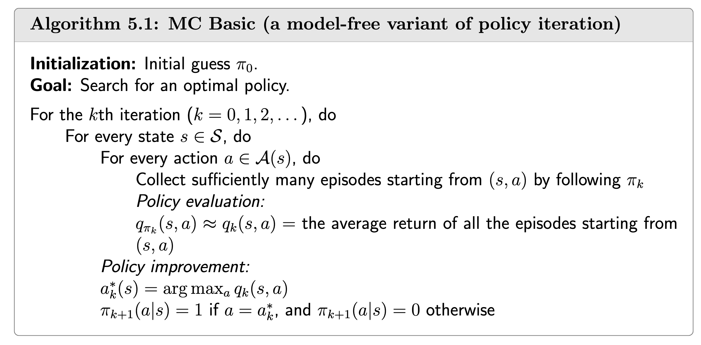

Reinforcement Learning
Math
参考https://github.com/MathFoundationRL/Book-Mathematical-Foundation-of-Reinforcement-Learning。
Concepts
- state: S={s1,s2,⋯,sn}，在某个环境下系统的状态;
- action: A={a1,a2,⋯,am}，agent能做的动作。不同的state下可能有不同的action集合；
- state transition: s1ais2，经过ai这个动作，从state s1变成state s2。对应会有一个转移概率矩阵，pπk,ij=p(sj∣si,ak)。
- reward：p(r∣si,aj)表示在si这个state，选择aj这个action，得到r这个reward的概率。
- policy：π(ai∣sj)，表示在sj这个state下，用策略π，选择ai这个action的概率。p(r∣s,a)和p(s′∣s,a)和π无关。
- trajectory: 一个state-action-reward chain：s1a1r1s2a2r2s3→⋯an−1rn−1sn；trajectory可以是无限长的。
- return: trajectory上所有reward之和；
- discounted return: 给第i个return乘上系数γi−1，比如说rewar永远是1，那么discounted return=1+γ+γ2+⋯=1−γ1，其中γ∈(0,1)称为discount rate。
Bellman Equation
现在来考虑一个确定的policy π，产生的随机过程。St表示t时刻在的state，Rt表示t时刻到达St的时候获得的reward，At表示t时刻到t+1时刻用的决策。可以表示为StAtRt+1St+1→⋯。
令Gt表示从t时刻的状态出发，trajectory总共的return。那么就有
Gt=Rt+1+γRt+2+γ2Rt+3+⋯
令vπ(s)表示在s这个state出发，期望能得到的return。也就有
vπ(s)=E[Gt∣St=s]=E[Rt+1+γGt+1∣St=s]=E[Rt+1+γvπ(St+1)∣St=s]=a∑π(a∣s)[r∑p(r∣s,a)⋅r+γs′∑p(s′∣s,a)⋅vπ(s′)]
令rπ(s)表示π这个policy之下，在s点出发走一步的期望reward，用pπ(s′∣s)表示在π这个policy之下，从s点出发走一步到达s′的概率，那么可以重写：
rπ(s)pπ(s′∣s)vπ(s)=a∑π(a∣s)r∑r⋅p(r∣a,s)=a∑π(a∣s)s′∑p(s′∣s,a)=rπ(s)+γs′∑pπ(s′∣s)⋅vπ(s′)
然后就可以写成矩阵形式：
vπ=rπ+γPπvπ
其中Pπ,ij=pπ(sj∣si)。这个就是Bellman Equation。v向量叫做state value。
根据这个，理论上矩阵求逆就可以在某个policy下把所有v都解出来。可以证明这个方程有唯一解：
vπ=(I−γPπ)−1rπ
但这个复杂度是O(∣S∣3)。
为了快速求解，可以使用迭代法：
vn+1=rπ+γPπvn
则有
vn+1−vn=γPπ(vn−vn−1)=γnPπn(v1−v0)
可以得出{vn}是一个Cauchy序列，收敛到v∗，有v∗=rπ+γPπv∗。
这个迭代法复杂度就变成了O(∣S∣2logprecision)。
Action value: qπ(s,a)=E[Gt∣St=s,At=a]。
qπ(s,a)=E[Rt+1+vπ(St+1)∣St=s,At=a]=r∑r⋅p(r∣s,a)+s′∑p(s′∣s,a)vπ(s′)
可以写成
vπ(s)=a∑π(a∣s)qπ(s,a)
Optimal State Values and Bellman Optimality Equation
现在研究BOE(Bellman Optimality Equation)。之前的Bellman Equation的目标是对于一个确定的策略，解出state value/action value，也就是说合法的state value都应该满足Bellman Equation。现在我们想建立另一个equation，使得只有最优的state value能够满足。
我们现在假设v(s)是一个变量，满足：
v(s)=πmaxa∑π(a∣s)q(s,a)
其中
q(s,a)=r∑r⋅p(r∣s,a)+s′∑v(s′)⋅p(s′∣s,a)
我们想要知道四件事情：
- 这个方程是否有解；
- 这个方程解是否唯一；
- 怎么找到这个方程的解；
- 这个方程的解就是最优的state value吗。
首先可以得出
v(s)≤πmax((amaxq(s,a))a∑π(a∣s))=amaxq(s,a)
令a=argmaxaq(s,a)，则π(a∣s)=1时，不等式取等。
所以说v(s)的解就是最大的q(s,a)。
然后我们可以结合所有s，仿照Bellman Equation的方法，得出一个矩阵形式：
v=πmax(rπ+γPπv)
引入γ-contract性质：如果一个函数f(x)满足∥f(x1)−f(x2)∥≤γ∥x1−x2∥，则说这个函数是γ-contract的。
对于形如x=f(x)的方程，如果同时f(x)是γ-contract的（γ∈[0,1)），那么一定会满足存在唯一解x=f(x)：
构造数列{xn}，其中x0∈Rn是任意的，xi=f(xi−1)对于i>0。可以得出：
⟹⟹xi+1−xi=f(xi)−f(xi−1)∥xi+1−xi∥≤γ∥xi−xi−1∥∥xn+1−xn∥≤γn∥x1−x0∥=γn∥f(x0)−x0∥
利用∥xm−xn∥≤∥xn+1−xn∥+⋯+∥xm−xm−1∥≤1−γ1∥xm−xm−1∥可以得出{xn}是Cauchy序列，所以说{xn}收敛。令x∗=limn→∞xn，有f(x∗)−x∗=limn→∞(xn+1−xn)=0（这里要用到f(x)连续的条件，连续可以由γ-contract推出）。
综上，这个方程一定有解x∗。假设存在两个解x1∗=x2∗，则有∥x1∗−x2∗∥=∥f(x1∗)−f(x2∗)∥≤γ∥x1∗−x2∗∥，矛盾（γ<1）。所以说解是唯一的。
同时，证明过程中给出了一个迭代求解x=f(x)这个方程的办法。
回到我们的BOE方程：
v=πmax(rπ+γPπv)
令f(v)=maxπ(rπ+γPπv)，我们证明f(v)是在∞-norm下是γ-contract的，即
∥f(v1)−f(v2)∥∞≤γ∥v1−v2∥∞
证明：假设π1∗是f(v1)取的π，π2∗是f(v2)取的π，则
f(v1)−f(v2)f(v1)−f(v2)≤γPπ1∗(v1−v2)≥γPπ2∗(v1−v2)
可得
(Pπ1∗(v1−v2))i=piT(v1−v2)≤piT∣v1−v2∣≤∥v1−v2∥∞
第一个不等式利用了p矩阵的非负性，给每一维的v1−v2都取了绝对值；第二个不等式当且仅当最大的一维v1−v2刚好让piT取到了1。
同理可以得到(Pπ2∗(v1−v2))i≥−∥v1−v2∥∞。所以就得到了∥f(v1)−f(v2)∥∞≤γ∥v1−v2∥∞，所以说可以回答：
- BOE存在解；
- BOE解唯一；
- BOE的解可以通过迭代法求得。
现在我们来证明v=f(v)的解v∗就是最优的v，即v∗≥vπ,∀π∈Π。
首先可以得到π∗=argmaxπrπ+γPπv∗，是产生v∗的对应策略。则我们可以得出：
v∗−vπ=rπ∗+γPπ∗v∗−rπ+γPπvπ≥rπ+γPπv∗−rπ+γPπvπ=γPπ(v∗−vπ)≥γ2Pπ2(v∗−vπ)≥γnPπn(v∗−vπ)
两边同时令n→∞，得到v∗−vπ≥0，即v∗≥vπ对于所有的π。
综上，BOE方程的解是最优的vπ，并且可以用迭代法求解。
Value Iteration and Policy Iteration
Value Iteration: 利用前一章说的方法：
πn+1vn+1=πargmax(rπ+γPπvn)=rπn+1+γPπn+1vn
但是π难以枚举。我们利用之前推出的elementwise贪心公式：
v(s)=amaxq(s,a)
可以得到π取贪心策略的时候，可以得到最大值。这样只需要枚举所有的a∈A即可。
复杂度O(∣A∣∣S∣2logprecision)。其中∣S∣2不一定吃的满，因为P矩阵可能是稀疏的。
Policy Iteration：先确认一个初始Policy，然后利用Bellman Equation迭代出当前对应的v，然后再利用Value Iteration的方法迭代一步，得到新的policy。这样的好处是，每次policy对应的v都会比原先的v好一点。
Truncated Policy Iteration：把Policy Iteration改成不一定迭代到Bellman Equation收敛，也不像Value Iteration一样只迭代一下，而是迭代k次，取一个折中。
Monte Carlo Methods
如果没有模型（也就是说奖励模型p(r∣s,a)和状态转移模型p(s′∣s,a)都不知道），怎么训练（这个时候需要data数据）。
用大数定律估计模型，没啥好说的

这个太垃圾了，非常inefficient。
最后可以搞出一个好一些的算法：
- 以episode上面每一个节点作为起点来作为采样点；
- 为了让episode尽量遍历更多节点，把原先的贪心Policy改成有epsilon的概率随机选择一个action。
Policy Gradient Methods